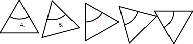

- Изберете обектите, които искате да преместите или копирате.
- Стартирайте този инструмент.
- Въведете ъгъла на завъртане в лентата с опции
- Задайте референтната точка с мишката или въведете координата в
командния ред.
- Задайте целевата точка.
На фигурата по-долу двете референтни точки са обозначени. Ъгълът на
завъртане в примера е 15 градуса, а броят на копията - четири. Това води до
общ ъгъл на завъртане от 60 градуса.
- Извежда се диалоговият прозорец за преместване и завъртане.
За да преместите обектите, изберете "Изтрий оригинала", а за да ги
копирате, изберете "Запази оригинала". Можете също така да създадете
произволен брой копия наведнъж, като изберете "Multiple Copies" (Множество
копия) и въведете броя на копията в текстовия ред по-долу.
Новите същности се поставят на същия слой като оригиналите и имат
същите атрибути. За да използвате вместо това текущия слой и текущите
атрибути, поставете отметка на "Use current layer and attributes"
(Използвай текущия слой и атрибути).
- Щракнете върху "OK", за да преместите и завъртите същностите.
